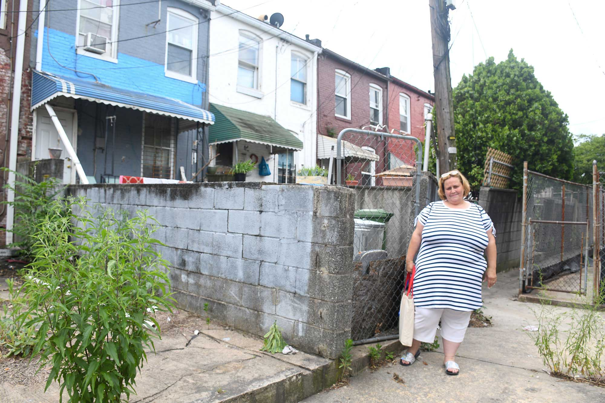
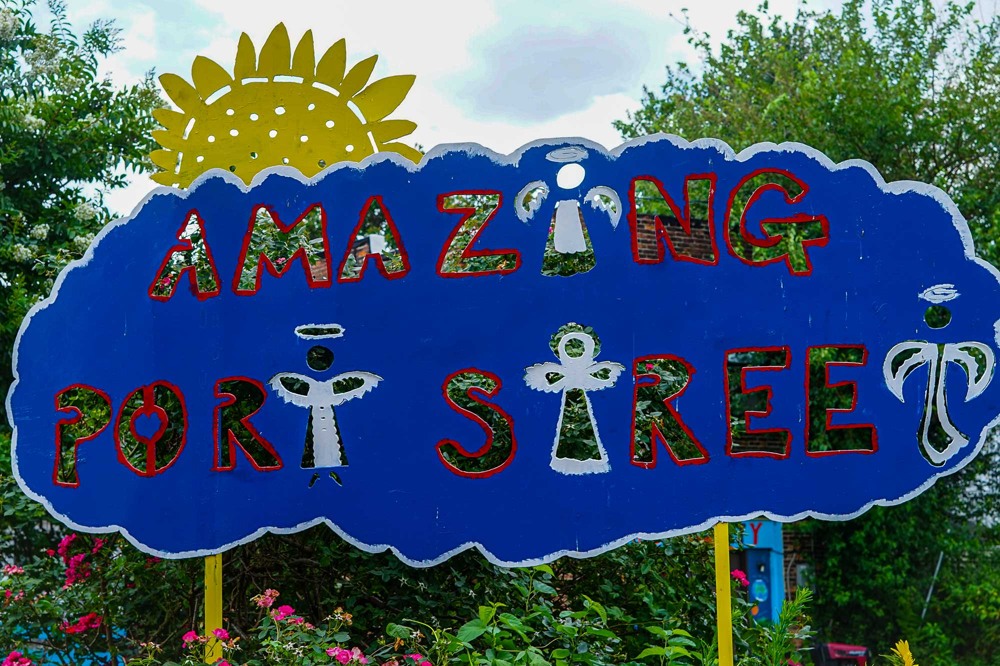

They came for better lives and schools. Immigrants now see America’s divisions hurting their kids
BIANCA VÁZQUEZ TONESS

Aurora Public Schools Superintendent Rico Munn, center, works with North Middle School students, from left to right, Jose Carrizales, 12, Wesley Tun-Medina, 12, and Felipe Flores, 12, during a math card game at North Middle School on June 17, 2014. MGT, a Florida-based consulting company, will manage North after four years of poor test scores.
AURORA, Colo. (AP) — Starting seventh grade at her first American school, facing classes taught entirely in English, Alisson Ramirez steeled herself for rejection and months of feeling lost.
“I was nervous that people would ask me things and I wouldn’t know how to answer,” the Venezuelan teen says. “And I would be ashamed to answer in Spanish.”
But it wasn’t quite what she expected. On her first day in Aurora Public Schools in Colorado this past August, many of her teachers translated their classes’ relevant vocabulary into Spanish and handed out written instructions in Spanish. Some teachers even asked questions such as “terminado?” or “preguntas?” — Are you done? Do you have questions? One promised to study more Spanish to better support Alisson.
“That made me feel better,” says Alisson, 13.
Outside the classrooms, it’s a different story. While that school system is striving to accommodate more than 3,000 new students mostly from Venezuela and Colombia, the city government has taken the opposite approach. City Council has tried to dissuade Venezuelan immigrants from moving to Aurora by vowing not to spend any money helping newcomers. Officials plan to investigate the nonprofits who helped migrants settle in the Denver suburb.
When Aurora’s mayor spread disputed claims of Venezuelan gangs taking over an apartment complex there, former president and current GOP candidate Donald Trump magnified the claims at his campaign rallies, calling Aurora a “war zone.” Immigrants are “poisoning” schools in Aurora and elsewhere with disease, he has said. “They don’t even speak English.” Trump has promised that Aurora, population 400,000, will be one of the first places he launches his program to deport migrants if he’s elected.
This is life as a newcomer to the United States in 2024, home of the “American dream” and conflicting ideas about who can achieve it. Migrants arriving in this polarized country find themselves bewildered by its divisions.
Many came looking for better lives for their families. Now, they question whether this is even a good place to raise their children.
Rumors make life harder for immigrants in Aurora

Ivanni Herrera, a Venezuelan migrant, was homeless when she gave birth last winter in Aurora, Colo. The city has turned down requests to help migrants, yet still they come. (Jack Dempsey)
Of course, it’s not always clear to Alisson’s family that they live in a discrete city called Aurora, with its own government and policies that differ from those of neighboring Denver and other suburbs. One thing has seemed obvious to her mother, Maria Angel Torres, 43, as she moves around Aurora and Denver looking for work or running errands: While some organizations and churches are eager to help, some people are deeply afraid of her and her family,
The fear first became apparent on a routine trip to the grocery store back in the spring. Torres was standing in line holding a jug of milk and other items when she moved a little too close to the young woman in front of her. The woman — a teen who spoke Spanish with an American accent — told Torres to keep her distance.
“It was humiliating,” says Torres. “I don’t look like a threat. But people here act like they feel terrorized.”
And when Aurora Mayor Mike Coffman — and then Trump — started talking about Venezuelan gangs taking over an apartment and the entire city of Aurora, Torres didn’t understand. While she didn’t believe that gangs had “taken over,” she worried that any bad press about Venezuelans would affect her and her family.
Keeping out dangerous people is important to Torres. The whole reason her family left Venezuela was to escape lawlessness and violence. They didn’t want it to follow them here.
In addition to Alisson, Torres has an older daughter — Gabriela Ramirez, 27. Ramirez’s partner, Ronexi Bocaranda, 37, owned a food truck selling hot dogs and hamburgers. Bocaranda says government workers in Venezuela extorted a bribe from him known as a “vacuna,” or vaccine, because paying it ensures protection from harassment. He paid them the equivalent of $500, about half a week’s earnings, to continue operating.
The next week, when Bocaranda refused to pay, the government workers stabbed him in the bicep; the one-inch scar remains visible on his left arm. The men threatened to kill Ramirez and her young son, who were both at the food truck that day. Bocaranda sold the business, and the family, including Torres and Alisson, all fled to Colombia.
A little over two years later, the family headed north on foot through the Darién Gap. In Mexico, they crossed the border in Juarez and turned themselves in to U.S. Border Patrol. They all have deportation hearings in 2025, where they will have the opportunity to plead their case for asylum based on the threats against Bocaranda, Ramirez and her son. In the meantime, they have settled in Aurora, after hearing about the Denver area from a family who helped them on their journey to the U.S.
Torres and her daughter tried to get their kids into school soon after they arrived in Aurora in February, but they were confused by the vaccination requirements. Could the kids enter school with the vaccinations they received in Venezuela and Colombia, or would they have to get all new shots? Would they have to pay for each one, potentially costing hundreds of dollars per child?
Alisson and Dylan stayed home for months. Dylan played math or first-person shooter games. Alisson watched crafting videos on TikTok. When they finally entered school in the fall, Gabriela Ramirez and Torres both hoped instruction would be in English, believing their children would learn the language faster that way.
Times have changed in Aurora

A group of men approach a truck, containing someone looking for workers, outside the Dayton Street Day Labor Center in Aurora. Nov. 14, 2023.
Kevin J. Beaty/Denverite
If they’d arrived in Aurora, say, three years ago, that might have been what they encountered.
Aurora is accustomed to educating immigrants’ children. More than a third of residents speak a language other than English at home, according to the 2020 U.S. Census. Immigrants and refugees have been attracted to Aurora’s proximity to Denver and its relatively lower cost of living.
But the sudden arrival of so many students from Venezuela and Colombia who didn’t speak English caught some Aurora schools off guard. Before, a teacher in the 38,000-student school system might have had one or two newcomer students in her class. Now, teachers in some schools have as many as 10, or a third of their classroom roster.
When Marcella Garcia visited classrooms where only English was spoken, she noticed the newcomers weren’t talking. “Kids were being left out and not able to engage,” says Garcia, principal at Aurora Hills Middle School.
The schools reached out for advice and training from the district’s central office, which recommended a strategy called “translanguaging.” That means using Spanish at times to help students make meaning of the English lessons and conversations happening around them.
It’s not clear how much it’s helping students learn — it’s too soon to tell — or if the school is striking the right balance between translating for newcomers and forcing them to engage in what teachers call a “friendly struggle” to understand and learn English.
But the approach has helped Alisson feel more at ease. On her first day of school, her social studies teacher, a bald man with tattooed forearms and a gruff teaching persona, didn’t translate anything or use Spanish in his presentation. “I thought about sitting there and not saying anything,” Alisson remembers. “But then I thought, ‘I’m here to learn.’”
She and a friend approached the teacher during class. Now Jake Emerson is one of her favorite teachers.
On a Wednesday in September, Alisson and her friends were sitting at a round table in the back of Emerson’s class. They spoke Spanish among themselves as Emerson spoke to the rest of the class about the drawing he was projecting on the large screen in the front of the class.
It was a scene from an ancient Egyptian marketplace. “What do you think this dude here is doing with the basket?” Emerson asked the class. The students at Alisson’s table kept talking, even as Emerson spoke. One girl who’d been in Aurora schools longer than the rest translated for Alisson and the other teens.
Before the school adopted this new approach, teachers may have shut down a conversation among students in Spanish. “If I saw two students speaking Spanish, I assumed they were off topic,” says Assistant Principal John Buch. Now, he says students are encouraged to help each other in any language they can.
Some residents of McElderry Park say they will not install window air conditioners on the first floor of their rowhouses for fear they offer easy entry for burglars. (Photo by Otto Blais-Nelson | Wide Angle Youth Media)
Solomon Simmons, 70, and his neighbor Harriett Alexander said McElderry Park used to be more tightknit — “like a village,” Simmons said.
Public health studies have shown that without community cohesion, residents are at more risk when temperatures soar. Baltimore health officials say that isolation is always a danger to health.
Today, Simmons said, many of his old neighbors have died. Only about four people remain from the group of homeowners his mother met when she moved to McElderry Park in the 1980s.
“Pride is gone,” he said. He will not put an air-conditioning unit in a first-floor window facing the street “because of security.” He has air conditioning in his bedroom, but he’s mindful that using it costs money.
“One of the things that does concern me is that my electric bill will probably be a lot more just trying to stay cool.”
He said he didn’t know about cooling centers but would rather take an air-conditioned drive or go to the movies than sit in a cooling center.
Alexander, retired from Armco Steel and the Baltimore school system, follows the old Baltimore practice of scrubbing her rowhouse’s white marble steps often. She used to scrub the steps of neighbors’ houses as well. “It’s important to me,” she said. “This is where I live.”
She tends large pots of hostas and lilies that bloom next to her rowhouse steps, and on summer days she sits in the shade of a mature sidewalk tree and chats with neighbors. She has air conditioning in her second-floor bedroom but doesn’t like using it because she fears she wouldn’t hear if anyone was breaking into her house.
“I don’t think it safe to live in a house with an air conditioner running, drowning out everything else,” Alexander said. “You don’t know someone’s in your house until they’re in your room.”
But especially for children, older residents and people coping with chronic diseases, air conditioning is the answer.
Tammy Jackson, who has asthma, said she had to stop cooking dinner one July evening when the heat made it hard for her to breathe. The next day, she told her husband, “Baby, I can’t cook until I get AC.”
Even if someone from McElderry Park decided to find a cooling center, some centers were closed on the weekend. The closest center open Saturday and Sunday was about a mile away — a long walk for the young or the old in 100-degree heat.
Jennifer Martin, Baltimore's deputy health commissioner for population health and disease prevention, said she was “sad and surprised” to hear so many people were unaware of the cooling centers.
By the end of July, the health department had declared 12 Code Red days this year, and the department counted 2,454 people who had visited cooling centers.
Martin said the health department is working with community groups to find places in addition to city-owned buildings — maybe churches or community associations — where residents could find a place with air conditioning. Those would offer relief closer to home.
Scott, the City Council president, said that cooling centers are fine but may not be the answer for everyone. “We have to understand the culture of the neighborhood. Some people are not going to want to be leaving their homes to get cool,” he said.
Lewis said, “We wouldn’t need cooling centers if we had healthy neighborhoods.”
“Environmental justice and climate change are inextricably linked.”
- Sacoby Wilson, University of Maryland public health professor
Heading off catastrophe

Melissa Canady says that the concrete block walls in her backyard prevent the flow of air and trap heat behind her house. (Photo by Maris Medina | University of Maryland)
Twenty people have died of heat-related illnesses in Maryland so far this year, three of them in Baltimore, according to state data through Aug. 28.
From July 16 through July 22, when the heat wave broke, 47 people went to emergency rooms when the heat aggravated chronic conditions such as heart disease, diabetes or lung problems.
Yet it could have been worse. Heat catastrophes are not theoretical. In Chicago in 1995, more than 700 people died during a five-day heat wave.
And summer heat will get more extreme. With every year, researchers warn, temperatures will soar higher and the heat waves will last longer — putting more pressure on city governments to help residents cope.
Historically, the Baltimore area has averaged about six days a year when the heat index exceeded 100 degrees, according to new research from the Union of Concerned Scientists and the University of Idaho.
If no action is taken to reduce carbon emissions, by mid-century that figure will rise to more than 37 days annually, according to the researchers. The study defines mid-century as starting in 17 years.
By the end of the century, as a baby born today becomes a senior citizen, there will be 65 days with a heat index of 100 degrees or higher, the researchers projected. That’s about the same number as McAllen, Texas, a city that abuts the Mexican border.
Peter Beilenson, Baltimore’s health commissioner from 1992 to 2005, now the health services director of Sacramento County, California, said health departments could use different strategies to deal with extreme heat.
Public health workers could be redirected during heat waves to knock on doors of people who are most vulnerable to heat, he said. That would allow workers to hand out information on cooling centers and give them a chance to assess whether the resident needs to go to the emergency room.
The Baltimore health department has done this to deal with other problems, Beilenson said — for example, to check on tuberculosis patients or alert residents to the dangers of lead paint.
Candidates for office have long used data that tells them which doors to knock on to meet potential voters. Health workers, Beilenson said, could use data to find the most vulnerable during heat waves.
Martin said the health commissioner had recorded a call warning of the heat that was sent to older people who have used the city's services for aging. But during the 100-degree Code Red emergency, Martin said, the health department did not send teams into neighborhoods.
“Being able to identify vulnerable areas [where people are especially endangered by heat] is very challenging,” she said. Also, “in a heat wave, everyone is at risk, including people who knock on doors.”
“We wouldn’t need cooling centers if we had healthy neighborhoods.”
- Del. Robbyn Lewis of East Baltimore
Trees help with heat

The garden entrance at Amazing Grace Evangelical Lutheran Church is one of the few green spaces in the McElderry Park neighborhood. (Photo by Ian Round | University of Maryland)
When Baltimore officials are asked how the city is preparing for the more extreme temperatures ahead, several people point to the efforts by City Hall and volunteer groups to plant more trees. Citywide, the tree canopy in 2015 was 28%, up from 27% in 2007.
In 2015, many East Baltimore neighborhoods had a tree canopy of about 10%, according to a Howard Center analysis of tree canopy data gathered by researchers at the U.S. Forest Service and the University of Vermont Spatial Analysis Lab.
Many blocks had no trees at all.Some city officials resist questions about where climate change falls on the list of government priorities when City Hall has to deal with poverty, crime, police corruption, poor schools and crumbling infrastructure.
“I don’t like to rank things,” said Scott, the City Council president. “For me, when you’re thinking about issues like heat, that’s connected to safety. It’s all interconnected. We need to stop thinking in silos.”
He acknowledges that “trees and climate change were not a high priority for mayors and council members of Baltimore’s past.”
The question, said Scott, who is expected to be a mayoral candidate next year, is “how can we evolve and get more innovative about this discussion?”
At the end of July, Scott released an agenda with 26 priorities for the coming council year. Climate change was not among them.
Rowhouses in the heat
Rowhouses efficiently conserve heat — which is welcome in the winter, a problem in the summer.
On a hot summer day, Melissa Canady walked through the alley behind her rowhouse. The backyard is concrete, poured by a previous owner to create a space that could be cleaned by a broom. Concrete blocks form low walls that separate each yard.
“The neighborhood’s so closed in,” she said. “There are so many houses. There’s no air flow. If there was some way you could get some air into the community.”
Her backyard looks out onto a patch of green, the Amazing Port Street commons, a block of green space cared for by Amazing Grace Lutheran Church and created when a row of vacant houses was razed. The neighbors sometimes use it for events such as community cookouts.
It’s the largest green space for blocks. But some neighbors said they are reluctant to walk their dogs there for fear they will step on syringes discarded by people who use drugs.
Coping with the heat
As temperatures in Baltimore reached 100 on July 20, most everyone around the city was staying inside. Some of the people on the streets walked under open umbrellas, carrying their own circle of shade. Men wore damp cloths draped under their caps or on the backs of their necks. No one was moving quickly.
Few people were on the street. “This is the quietest the block ever been,” Tammy Jackson said. “I can’t believe it.”
But city life continued despite the heat. A team of paramedics was called to an East Baltimore block when a resident found a man she didn’t know passed out on her front steps.
The paramedics revived the man, who apparently had overdosed, with a dose of Narcan. He stood up and wandered off, rejecting advice he go to the hospital.
One of the paramedics, holding a bottle of water, stood on the sidewalk and surveyed the quiet street. Everyone walking around on that scorching afternoon was dehydrated, one paramedic observed. Everyone. Keeping enough fluids in the body is difficult in temperatures so extreme.
A little earlier that day, David Brown, 68, sat a few blocks away waiting for a bus. He said he didn’t mind the heat.
And what will he do in future summers, as the heat becomes more extreme?
“Accept it,” he said.
Jake Gluck, Jane Gerard, Roxanne Ready, Theresa Diffendal and Sean Mussenden of the University of Maryland contributed to this story. Additional information was also provided by Sean McMinn, Meg Anderson and Nora Eckert of NPR.